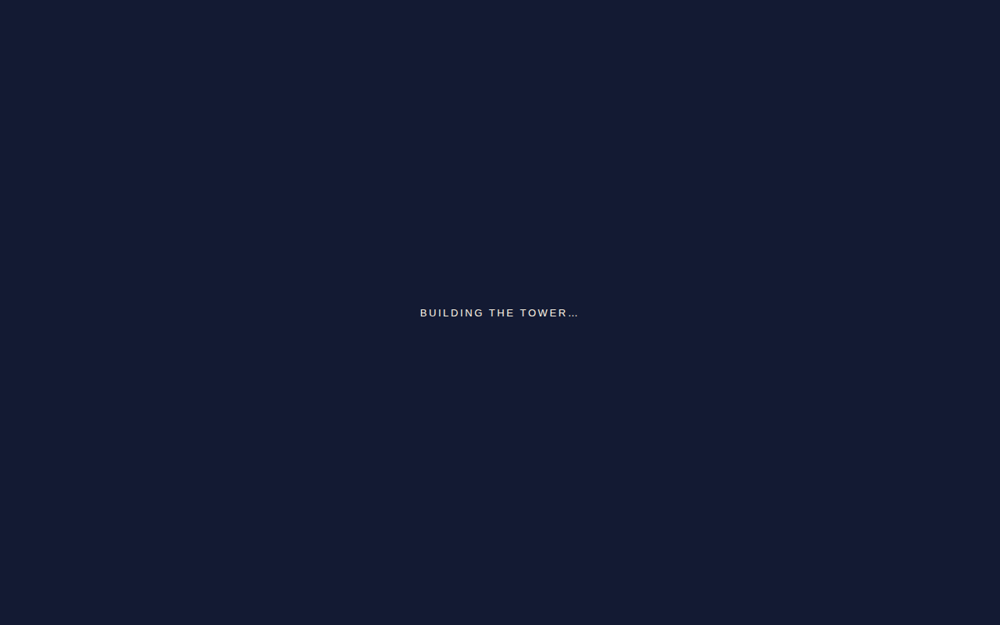

Qwen3.8-Flash-Next
oQ4eJundot oQ4e + MTPomlx 0.7.4.dev1 · M3 Ultra
Tasks run3
Working results3 of 3
Attempts4
Generated tokens1.08M
Energy300 Wh
Results
Every attempt, newest first per task. Faded rows are earlier attempts that were retried.
| Task | Run ended · judged page | Generated | Reasoning | Model calls | Tool errors | Energy | Wall | |
|---|---|---|---|---|---|---|---|---|
 |
Eiffel Tower attempt 2 of 2 · result |
agent finished 1 canvas · 0 missing files · 0 page errors |
284.2K | 173.4K | 334 | 5 | 76.72 Wh | 3 h 28 min |
 |
Eiffel Tower attempt 1 of 2 |
no scene 0 canvas · 1 missing file · 0 page errors |
41.5K | 28.2K | 20 | 2 | 18.47 Wh | 17 min |
 |
Reading room 1 of 1 |
agent finished 1 canvas · 0 missing files · 0 page errors |
347.8K | 202.1K | 377 | 8 | 94.53 Wh | 7 h 24 min |
 |
Scholar's Mate 1 of 1 |
agent finished 1 canvas · 0 missing files · 0 page errors |
403.9K | 272.0K | 374 | 3 | 110.39 Wh | 3 h 14 min |
* Reasoning estimated from the raw stream where the engine reports one combined count. Wall time depends on hardware and is not ranked.
Pack and engine
- Model
- Qwen3.8-Flash-Next
- Quant
- oQ4e
- Pack
- Jundot/Qwen3.8-Flash-Next-oQ4e-mtp · Jundot oQ4e + MTP
- Revision
- 2322c888c2c314d4eceddf0159dec5d821aa1e41
- Size on disk
- 107.7 GB
- Engine
- omlx 0.7.4.dev1
- Engine settings
- speculative=MTP
- Hardware
- M3 Ultra 60c / 256 GB
- Request
- {"reasoning_effort": "high"}
- Reasoning effort
- high
- Thinking budget
- Not explicitly recorded; engine/provider default unknown
- Output limit
- 65.5K tokens per response, including reasoning